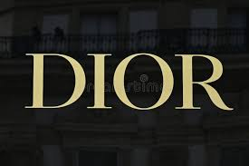
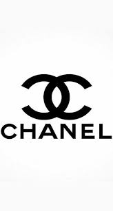
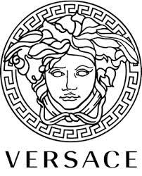
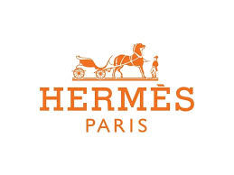

La moda de alta costura es una expresión artística que refleja elegancia, estatus y creatividad.
Las grandes marcas de lujo han dejado huella en la historia gracias a sus diseños icónicos,
su impacto cultural y la visión de sus fundadores. A continuación, exploraremos siete de las
casas de moda más influyentes del mundo.
Dior

**Christian Dior**, fundador de la marca en 1946, revolucionó la moda con el icónico
"New Look", caracterizado por siluetas femeninas, faldas amplias y cinturas marcadas.
Hoy en día, Dior continúa siendo símbolo de glamour y elegancia mundial.
Chanel

**Coco Chanel**, fundadora en 1910, transformó el vestir femenino al introducir diseños cómodos,
simples y elegantes. Su legado incluye el traje de tweed, el bolso acolchado y el famoso perfume Chanel No. 5.
Prada
Fundada por **Mario Prada** en 1913, inicialmente se especializó en artículos de cuero exclusivos.
Con el tiempo, Prada se convirtió en un referente de estilo minimalista y sofisticado.
Versace

**Gianni Versace** fundó la marca en 1978, conocida por su estilo audaz, glamuroso y lleno de color.
Su influencia en la cultura pop convirtió a Versace en icono del lujo moderno.
Hermés

Fundada por **Thierry Hermés** en 1837, inicialmente como taller ecuestre, Hermés evolucionó para
convertirse en una marca prestigiosa reconocida por la artesanía refinada y sus bolsos icónicos.
Louis Vuitton
**Louis Vuitton** comenzó en 1854 diseñando baúles y maletas de viaje de lujo. Con el tiempo,
su monograma se convirtió en uno de los símbolos más reconocidos del mundo.
Gucci
Fundada por **Guccio Gucci** en 1921, la marca se destaca por mezclar sofisticación con modernidad.
Sus diseños influyen fuertemente en la moda global.